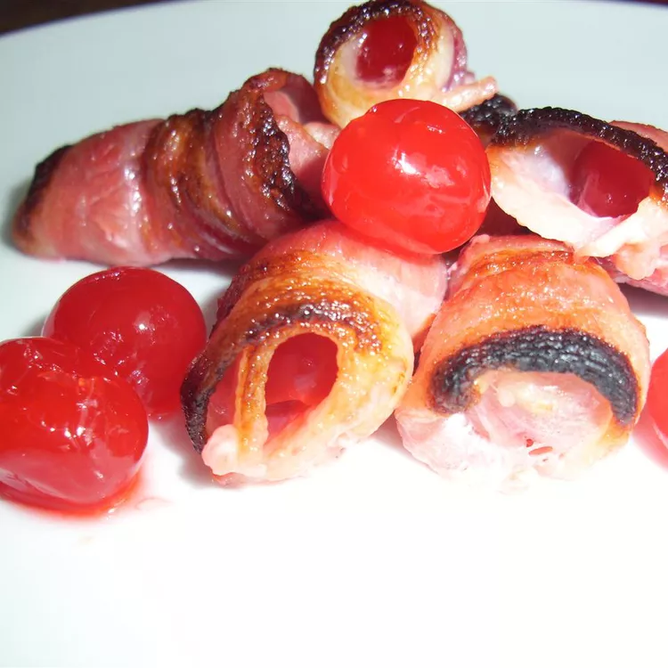

Bacon-Wrapped Cherries

Delicious Recipe for appetizers
This recipe for bacon-wrapped cherries makes one of my favorite appetizers. I say it serves 18 people, but if no one stops me, I will eat the whole batch myself and start making more.
Ingredients
- 36 maraschino cherries, stemmed, drained and juice reserved
- 18 slices bacon slices, halved
- 36 toothpicks
Steps
- Set the oven rack about 6 inches from the heat source and preheat the oven's broiler.
- Wrap each cherry with a bacon half, secure with a toothpick, and arrange on a baking sheet. Drizzle reserved cherry juice over wrapped cherries.
- Broil in the preheated oven until bacon is crisped to your liking, 3 to 10 minutes.